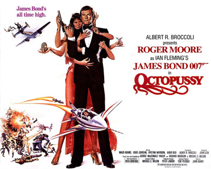
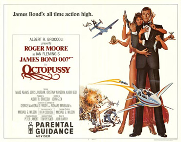
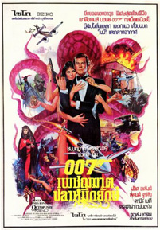
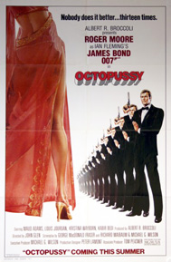
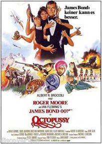

George MacDonald Fraser
Michael G. Wilson
Richard Maibaum
Henry Richardson
United International Pictures (International)
While trying to escape from East to West Berlin, British agent 009 is fatally wounded and dies after reaching the residence of the British Ambassador, dressed as a circus clown and carrying a fake Fabergé egg. MI6 immediately suspects Soviet involvement and, after seeing the real egg appear at an auction in London, sends James Bond to investigate and find out the identity of the seller. At the auction, Bond is able to swap the real egg with the fake and engages in a bidding war with exiled Afghan prince Kamal Khan, forcing Khan to pay £500,000 for the fake egg. Bond follows Khan back to his palace in Rajasthan, India, where Bond defeats Khan in a game of backgammon. Bond escapes with his contact Vijay, foiling the attempts of Khan's bodyguard Gobinda to kill the pair. Bond is seduced by one of Khan's associates, Magda, and notices that she has a blue-ringed octopus tattoo. Bond permits Magda to steal the real Fabergé egg fitted with listening and tracking devices by Q, while Gobinda captures and takes Bond to Khan's palace. After Bond escapes from his room, he listens in on the bug in the Fabergé egg and discovers that Khan is working with Orlov, a Soviet general, who is seeking to expand Soviet control into West-Central Europe.
After escaping from Khan's palace, Bond infiltrates a floating palace in Udaipur, India, and there finds its owner, Octopussy, a wealthy business woman, smuggler and associate of Khan. She also leads the Octopus cult, of which Magda is a member. Octopussy has a personal connection with Bond: she is the daughter of the late Major Dexter-Smythe, whom Bond was assigned to arrest for treason. Bond allowed the Major to commit suicide rather than face trial, and Octopussy thanks him for offering her father an honourable alternative, inviting Bond to stay on as her guest. Earlier in Khan's palace and later in Octopussy's palace, Bond finds out that Orlov has been supplying Khan with priceless Soviet treasures, replacing them with replicas while Khan has been smuggling the real versions into the West via Octopussy's circus troupe. Orlov is planning to meet Khan at Karl-Marx-Stadt (Chemnitz) in East Germany, where the circus is scheduled to perform. Gobinda sends mercenaries to kill Bond, but he and Octopussy gain the upper hand when the assassins break into the palace. Bond learns from Q that Vijay has been killed by the goons.
Travelling to East Germany, Bond infiltrates the circus and finds out that Orlov replaced the Soviet treasures with a nuclear warhead, primed to explode during the circus show at a US Air Force base in West Germany. The explosion would trigger Europe into seeking disarmament in the belief that the bomb was a US one that detonated by accident, leaving its borders open to a Soviet invasion. Bond takes Orlov's car, drives it along the train tracks and boards the moving circus train. Orlov gives chase, but is killed at the border by East German guards after they mistake Orlov for a defector. Bond kills the twin knife-throwing assassins Mischka and Grischka and, after falling from the train, commandeers a car to get to the airbase. Bond penetrates the base and disguises himself as a clown to evade the West German police. He attempts to convince Octopussy that Khan has betrayed her by showing her one of the treasures found in Orlov's car, which she was to smuggle for him. Octopussy realises that she has been tricked, and assists Bond in deactivating the warhead.
Bond and Octopussy return separately to India. Bond arrives at Khan's palace just as Octopussy and her troops have launched an assault on the grounds. Octopussy attempts to kill Khan, but is captured by Gobinda. While Octopussy's team, led by Magda, overpower Khan's guards, Khan and Gobinda abandon the palace, taking Octopussy as a hostage. Bond pursues them as they attempt to escape in their plane, clinging to the fuselage and disabling the tailplanes. In the subsequent struggle with Bond, Gobinda takes a deadly plummet off the roof of the plane and Bond rescues Octopussy from Khan, the pair jumping onto a nearby cliff only seconds before the plane crashes into a mountain, killing Khan. While M and General Gogol discuss the transport of the jewellery, Bond recuperates with Octopussy aboard her private boat in India.
Following For Your Eyes Only, Roger Moore had expressed a desire to retire from the role of James Bond. His original contract had been for three films, which was fulfilled with The Spy Who Loved Me. Subsequent films were negotiated on a film-by-film basis. Given his reluctance to return for Octopussy, the producers engaged in a semi-public quest for the next Bond, with Timothy Dalton being suggested and tests being filmed with both Michael Billington and James Brolin. However, when the rival Bond production Never Say Never Again was announced, the producers re-contracted Moore in the belief that an established actor in the role would fare better against former Bond, Sean Connery.
Sybil Danning was announced in Prevue magazine in 1982 as being Octopussy, but was never actually cast, later explaining that Albert Broccoli felt "her personality was too strong". Faye Dunaway was deemed too expensive. Barbara Carrera said she turned down the role to take a part in the competing Bond film Never Say Never Again. Casting director Jane Jenkins revealed that the Bond producers told her that they wanted a South Asian actress to play Octopussy, so she looked at the only two Indians in a then predominantly white Hollywood, Persis Khambatta and Susie Coelho. Afterwards, she auditioned white actresses, like Barbara Parkins, who she felt could pass for Indian. Finally, Albert Broccoli announced to her that they would cast Swedish-born Maud Adams, who had been a Bond girl in The Man with the Golden Gun, and had been recently used by Eon to screen test the potential Bonds. To acknowledge the nationality, Adams had her hair darkened, and a few lines were added about how she was raised by an Indian family. A different plotline, with Adams' British father exposed as a traitor, was used instead. The role of Magda went to another Swedish actress, Kristina Wayborn, who the producers first noticed playing Greta Garbo in the miniseries The Silent Lovers.
Octopussy is also the first film to feature Robert Brown as M, following the death of Bernard Lee in 1981. Brown came recommended by Moore, who had known him since both worked in the series Ivanhoe. The first actor to be cast in the film was Vijay Amritraj, a popular professional tennis player who Broccoli met watching the championships in Wimbledon. His character of Bond's ally in India was also named Vijay and used a tennis racket as a weapon. For the villains, Broccoli brought in his friend Louis Jourdan as Kamal Khan, while his daughter Barbara suggested Steven Berkoff for Orlov after having seen him perform his own play, Greek, in Los Angeles.
The filming of Octopussy began on 10 August 1982 with the scene in which Bond arrives at Checkpoint Charlie. Principal photography was done by Arthur Wooster and his second unit, who later filmed the knife-throwing scenes. Much of the film was shot in Udaipur, India. The Monsoon Palace served as the exterior of Kamal Khan's palace, while scenes set at Octopussy's palace were filmed at the Lake Palace and Jag Mandir, and Bond's hotel was the Shiv Niwas Palace. In England RAF Northolt, RAF Upper Heyford and RAF Oakley were the main locations. The Karl-Marx-Stadt railways scenes were shot at the Nene Valley Railway, near Peterborough, while studio work was performed at Pinewood Studios and the 007 Stage. Parts of the film were also shot in Hurricane Mesa, Hurricane-LaVerkin Bridge and New Harmony in Utah. Most of the crew as well as Roger Moore had diet problems while shooting in India.
The pre-title sequence has a scene where Bond flies a nimble homebuilt Bede BD-5J aircraft through an open hangar. Hollywood stunt pilot and aerial co-ordinator J.W. "Corkey" Fornof, who piloted the aircraft at more than 150 miles per hour, has said, "Today, few directors would consider such a stunt. They'd just whip it up in a computer lab." Having collapsible wings, the plane was shown hidden in a horse trailer; however, a dummy was used for this shot. Filming inside the hangar was achieved by attaching the aircraft to an old Jaguar car with a steel pole, driving with the roof removed. The second unit were able to add enough obstacles including people and objects inside the hangar to hide the car and the pole and make it look as though Moore was flying inside the base. For the explosion after the mini jet escapes, however, a miniature of the hangar was constructed and filmed up close. The exploding pieces of the hangar were in reality only four inches in length. Bond stole a Mercedes-Benz saloon car at a depot manned by antagonist soldiers, then as he tried to escape drove over barrier spikes which shredded his tyres. So he manoeuvred his vehicle's bare wheels onto the rails to pursue the train. During filming, the car had intact tyres in one scene so as to avoid any mishap.
Stunt coordinator Martin Grace suffered an injury while shooting the scene where Bond climbs down the train to catch Octopussy's attention. During the second day of filming, Grace - who was Roger Moore's stunt double for the scene - carried on doing the scene longer than he should have, due to a miscommunication with the second unit director, and the train entered a section of the track which the team had not properly surveyed. Shortly afterwards, a concrete pole fractured Grace's left leg. The cyclist seen passing in the middle of a sword fight during the tuk tuk chase sequence was in fact a bystander who passed through the shot, oblivious to the filming; his intrusion was captured by two cameras and left in the final film. Cameraman Alan Hume's last scene was that of Octopussy's followers rowing. That day, little time was left and it was decided to film the sunset at the eleventh hour.
The Fabergé egg in the film is real; it was made in 1897 and is called the Coronation Egg, although the egg in the film is named in the auction catalogue as "Property of a Lady", which is the name of one of Ian Fleming's short stories released in more recent editions of the collection Octopussy and The Living Daylights.
In a bit of diegesis that "breaks the fourth wall", Vijay signals his affiliation to MI6 by playing the "James Bond Theme" on a recorder while Bond is disembarking from a boat in the harbour near the City Palace. Like his fictional counterpart, the real Vijay had a distinct fear of snakes and found it difficult to hold the basket during filming.




